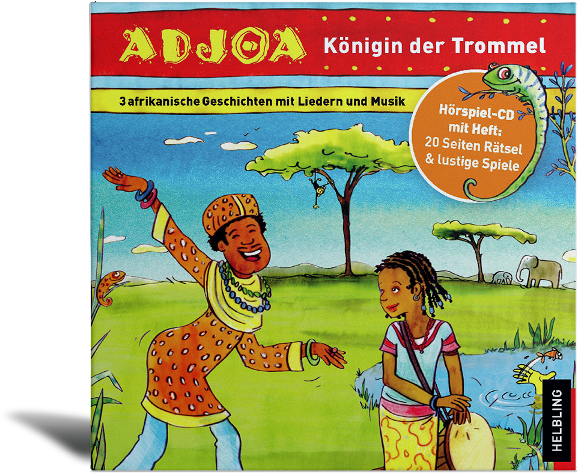

|

|
Autoren: Almut Kirmse und Markus Detterbeck
Gefallen Euch die beiden Hörgeschichten?
Diese und eine weitere Musik-Hörgeschichte gibt es auch auf CD.
Jetzt bestellen auf www.helblingmusik4kids.de!
Die musikalischen Mitmach-Geschichten aus Afrika stellen eine wunderschöne Alternative zu unseren mitteleuropäischen Märchen dar. Spannende und magische Abenteuer erzählen von Kindern und Tieren; sie laden zum Miterleben, zur Identifikation und zum Nachspielen ein.